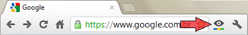
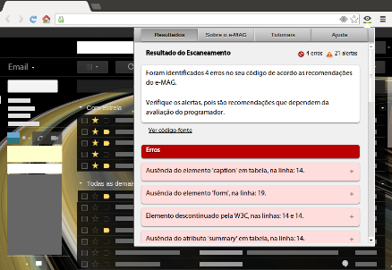
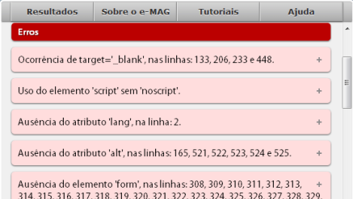
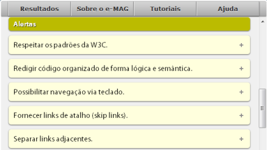
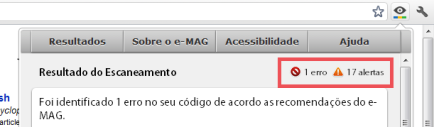
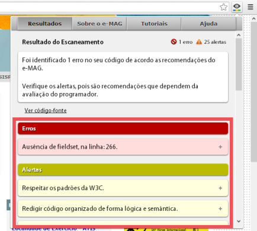
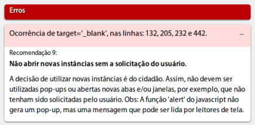

Manual de usuário
O eScanner é uma extensão desenvolvida para o navegador Google Chrome que funciona como um browser action. Isso significa que quando instalada seu ícone fará parte da barra de tarefas principal do navegador. Para iniciar a análise de uma página é necessário apenas clicar em seu ícone.
Ícone do eScanner na barra de ferramentas do Google Chrome.
Como usar?
Ao clicar no ícone do eScanner na barra de ferramenta, a análise da página é iniciada automaticamente e logo depois aparecerá o resultado, que pode ser o sucesso da análise apresentando a relação de erros e alertas ou a informação de que não foram encontrados erros no código fonte ou, ainda, a impossibilidade de realizar a análise.
Tela principal do eScanner exibindo avaliação da página aberta. voltar ao menu
Resultado da análise
O e-MAG, em sua versão 3.0, aboliu a divisão das suas recomendações de acessibilidade em níveis de prioridade, pois o padrão é voltado às páginas do Governo, não sendo permitidas então exceções com relação ao cumprimento das recomendações. Logo, todas as recoendações são igualmente relevantes.
Todas as recomendações que dependem da avaliação manual do usuário da extensão são emitidas como alertas. Já todas as recomendações que podem ser verificadas apenas a partir da análise automática do código fonte são classificadas como erros.
voltar ao menuQuando a análise falha
A análise da página pode não ocorrer quando não é possível capturar o código fonte da página ou quando há erros de sintaxe no código fonte que não conseguem ser tratados pelo parser do eScanner.
Caso seja exibida a mensagem:

siginifica que a requisição feita ao servidor da página foi concluída, mas retornou com resposta uma string vazia, ou seja, sem o código fonte da página requisitada.
Caso seja exibida a mensagem:

siginifica que o eScanner não conseguiu concluir sua avaliação, seja por um erro sintático que seu parser não consegue tratar ou pela impossibilidade de concluir a requisição ao servidor. Ocorrem várias tentativas de completar a análise até exibir a mensagem indicando a impossibilidade em realizar a análise da página.
Identificação de erros
Os erros são mostrados em vermelho na janela principal e representam as recomendações que podem ser verificadas diretamente a partir da análise do código fonte. Por exemplo, todas as imagens no código HTML, segundo as especificações do e-MAG, precisam ter uma descrição através do atributo alt. A ausência ou ocorrência deste atributo nos elementos imagem pode ser facilmente detectada no código fonte, logo essa recomendação é classificada como um erro na abordagem utilizada.
Fragmento da lista de erros, exibidos em vermelho. voltar ao menu
Emissão de alertas
Os alertas aparecem em amarelo em uma lista separada da lista de erros. Apesar dos alertas significarem todas as recomendações do e-MAG que não são detectáveis automaticamente, sua emissão nem sempre ocorre. Delas, 15 (quinze) sempre são exibidas independente da página avaliada. Os outros alertas dependem da ocorrência de outros elementos para serem exibidos na tela.
Por exemplo, a recomendação nº 42 do e-MAG pede que sejam fornecidas instruções para entrada de dados em campos de formulário, logo essa recomendação é exibida como um alerta e só se aplica a uma página se houver qualquer elemento de formulário contido nela.
Fragmento da lista de alertas, exibidos em amarelo. voltar ao menu
Elementos da página de exibição dos resultados
A página de exibição dos resultados é a tela principal do programa e é composta pelos seguintes elementos:
a) Menu com as quantidades de erros e alertas: composto por âncoras de atalho direto para a lista de erros e para a lista de alertas;
b) Box principal: apresenta mensagens sobre o status do processo de análise;
c) Lista de erros: descrição dos erros detectados na página;
d) Lista de alertas: descrição das recomendações que podem se aplicar à página.
Além da quantidade de alertas e da quantidade de erros detectados na análise da página, o menu também serve como atalho para avançar direto às listas de erros e alertas.
Em destaque, menu de atalhos para as listas de erros e alertas. voltar ao menu
Box principal
São cinco as possíveis mensagens que podem aparecer nessa área:
a) A mensagem de que não foi possível capturar o código fonte da página;
b) A mensagem de que não foi possível realizar a análise da página;
c) A mensagem sobre a quantidade de erros e sobre a importância de observar os alertas emitidos, ou;
d) A mensagem sobre a não existência de erros e sobre a importância de observar os alertas emitidos.
Em destaque, box onde é mostrado o estado do programa. voltar ao menu
Lista de erros e lista de alertas
A relação de erros contém uma descrição sintética do erro e a recomendação do e-MAG em que o erro se aplica. Da mesma forma, a relação dos alertas contém uma descrição sintética do alerta e a recomendação do e-MAG em que este se aplica.
Em destaque, listas de erros e alertas.

Os detalhes sobre um erro(e/ou alerta) são apresentados de forma sintética. voltar ao menu
Demais telas
O eScanner possui uma área para referências sobre o e-MAG, uma área com referências a tutoriais e outras ferramentas de avaliação de acessibilidade e uma área de ajuda quanto à utilização do programa.
* Sobre o e-MAG
Nesta tela há uma breve descrição sobre o Modelo de Acessibilidade de Governo Eletrônico, e links para o download da versão 3.0 do e-MAG e para o site do Departamento de Governo Eletrônico.
* Tutoriais
Nesta tela há links para tutoriais disponibilizados pelo Departamento de Governo Eletrônico e uma relação de outros softwares para avaliação e validação de acessibilidade de páginas Web.
* Ajuda
Nesta tela constam informações sobre a extensão e sobre sua utilização.